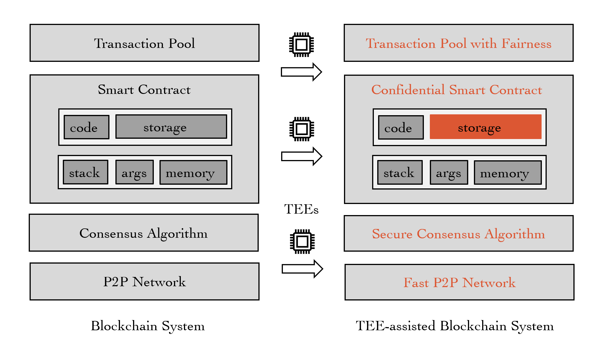

TEE-assisted Blockchain System

- [PDF] SoK: TEE-assisted Confidential Smart Contract.
22nd Privacy Enhancing Technologies Symposium (PETS 2022)
Rujia Li*, Qin Wang*, Qi Wang, David Galindo, Mark Ryan (*equal contribution)
- [PDF] Poster: An Offline Delegatable Cryptocurrency System.
The Network and Distributed System Security Symposium (NDSS 2021)
Rujia Li, Qin Wang, Xinrui Zhang, Qi Wang, David Galindo, Yang Xiang
- [PDF],[PPT],[VIDEO] An Offline Delegatable Cryptocurrency System.
3rd IEEE International Conference on Blockchain and Cryptocurrency (ICBC 2021).
Rujia Li*,Qin Wang*, Xinrui Zhang, Qi Wang, David Galindo, Yang Xiang (*equal contribution)
- [PDF],[PPT],[VIDEO]
An Accountable Decryption System Based
on Privacy-Preserving Smart Contracts.
23rd Information Security Conference (ISC 2020).
Rujia Li, Qin Wang, FengLiu, Qi Wang, David Galindo
- [PDF],[PPT] Auditable Credential Anonymity Revocation Based on Privacy-Preserving Smart Contracts
ESORICS 2019, 3rd International Workshop on Cryptocurrencies and Blockchain Technology
Rujia Li, David Galindo, Qi Wang
Blockchain Consensus Algorithm
- [PDF] Frontrunning Block Attack in PoA Clique: A Case Study.
4th IEEE International Conference on Blockchain and Cryptocurrency (ICBC 2022)
Xinrui Zhang, Qin Wang, Rujia Li, Qi Wang
- [PDF] Exploring Unfairness on Proof of Authority: Order Manipulation Attacks and Remedies.
17th ACM ASIA Conference on Computer and Communications Security (ACM ASIACCS 2022)
Qin Wang*, Rujia Li*, Shiping Chen, Qi Wang, Yang Xiang (*equal contribution)
- [PDF] Poster: A Weak Consensus Algorithm and Its Application to High-Performance Blockchain.
The Network and Distributed System Security Symposium (NDSS 2021)
Qin Wang, Rujia Li, Qi Wang
- [PDF],[PPT],[VIDEO]
A Weak Consensus Algorithm and Its Application to High-Performance Blockchain.
40th IEEE International Conference on Computer Communications (INFOCOM 2021).
Qin Wang*, Rujia Li* (*equal contribution)
Others (e.g., NFT, Web3)
- [PDF] Exploring Web3 From the View of Blockchain.
Qin Wang*, Rujia Li*, Qi Wang, Shiping Chen, Mark Ryan, Thomas Hardjono (*equal contribution) new.
- [PDF] How Do Smart Contracts Benefit Security Protocols?
Rujia Li*, Qin Wang*, Qi Wang, David Galindo (*equal contribution)
- [PDF] Non-Fungible Token (NFT): Overview, Evaluation, Opportunities and Challenges.
Qin Wang*, Rujia Li*, Qi Wang, Shiping Chen (*equal contribution).
- [PDF],[PPT] Poster: Transparent Certificate Revocation for CBE Based on Blockchain.
41st IEEE Symposium on Security and Privacy (SP 2020).
Qin Wang*, Rujia Li*, Qi Wang, David Galindo (*equal contribution)
Patents
- [PT1] A New Single Sign-on System and Its Method, 2015
Patent No.:CN105430014B. Status: Granted
Haiqiang Xie,Qingyuan Cai,Rujia Li
Thesis
- [PDF],[PPT] A New Academic Certificate Authentication Using Blockchain Technology
Msc thesis 2017,
Rujia Li (funded by IT Innovation Centre, University of Birmingham).
Back To Home
|